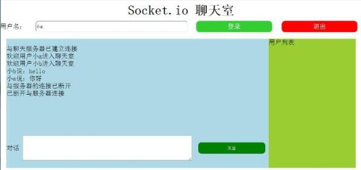
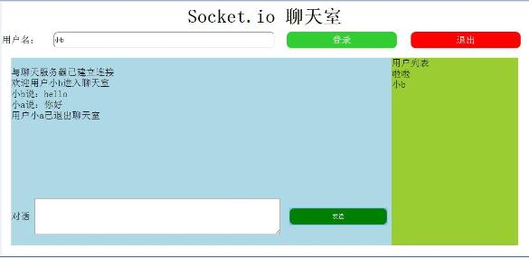

webSocket 与 用Socket.io实现简单的实时聊天室
在学习nodejs与h5，所以实现一个简单的实时聊天室功能。首先先学习一下websocket,然后是利用实现webSocket的Socket.io类库实现聊天室，跳转这里见代码
long poll 和 ajax轮询
web应用的信息交互过程通常是客户端通过 浏览器发出一个请求，服务器端接收和审核完请求后进行处理并返回结果给客户端，然后客户端将结果展示出来。这样的请求显示机制对于信息变化不是频繁的应用是可以的，但是对于实时性要求比较高的应用如设备监控，实时聊天等就会产生信息延迟。在websocket之前为了保持客户端和服务器端的信息同步主要的采用的是poll。
轮询
最早的一种实现实时Web应用的方案。客户端以一定的时间间隔向服务器发出请求，以频繁请求的方式来保持客户端和服务器端的同步。当客户端以固定频率向服务器发起请求的时候，服务器端的数据可能并没有更新，这样会带来很多无谓的网络传输。
长轮询（long poll）
长轮询是对定时轮询的改进和提高，目地是为了降低无效的网络传输。当服务器端没有数据更新的时候，连接会保持一段时间周期直到数据或状态改变或者时间过期，通过这种机制来减少无效的客户端和服务器间的交互。当然，如果服务端的数据变更非常频繁的话，这种机制和定时轮询比较起来没有本质上的性能的提高。
webSocket
WebSocket是用于 Web 应用程序的新一代双向通信技术，运行在单一套接字之上，它通过 JavaScript 接口暴露在 HTML5 兼容的浏览器中。
一个 WebSocket 就是客户端和服务端之间的标准双向 TCP 套接字。套接字以 HTTP 连接开始，在 HTTP 握手之后“升级”为 TCP 套接字。握手之后，任意一端都
可以发送数据。
WebSocket 连接本质上就是一个 TCP 连接，所以在数据传输的稳定性和数据传输量的大小方面，和轮询以及 Comet 技术比较，具有很大的性能优势。
为了建立一个Websocket连接，客户端浏览器首先要向服务器发起一个HTTP请求，这个请求和通常的HTTP请求不同，包含了一些附加头信息，其中附加头信息”Upgrade:WebSocket”表明这是一个申请协议升级的HTTP请求，服务器端解析这些附加的头信息然后产生应答信息返回给客户端，客户端和服务器端的Websocket连接就建立起来了，双方就可以通过这个连接通道自由的传递信息，并且这个连接会持续存在直到客户端或者服务器端的某一方主动的关闭连接。
Socket.io
Socket.io可以用于实现 HTML5中的WebSocket通信，可在Flash中使用WebSocket通信，XHR轮询，JSONP轮询，Forever Iframe这些通信方式。Socket.io类库可以接收所有与服务器端相连接的客户端发送的信息，也可以向这些客户端发送消息。该类库的一个显著特征是在服务器端与浏览器端之间提供一个共享接口，也就是当客户端与服务器端建立连接后，在处理消息时，开发者可以在客户端使用服务器端js代码。
socket.io 是基于事件的支持实时双向的通信，Socket.io 最先建立一个long polling 连接，然后尝试升级到更好的方式如 WebSocket。这个类库支持广播消息，和命名空间等。
使用Socket.io类库实现聊天室
聊天室实现效果如下


跳转这里见代码。
Socket.io 类库使用方法很简单，创建一个Socket.io服务器即可，但是该服务器依赖于一个已经创建的HTTP服务器。在HTTP服务器运行之后，使用listen方法为该服务器附加一个Socket.io服务器。
在一个Socket.io服务器创建之后，当客户端与服务器建立连接时，触发Socket.io服务器的connection事件。用on方法来监听事件，emit方法来触发事件，同时还有broadcast来广播消息等。具体使用方法可以查看Socket.io
参考文献
- 陆凌牛 《Node.js权威指南》
- 使用 HTML5 WebSocket 构建实时 Web 应用